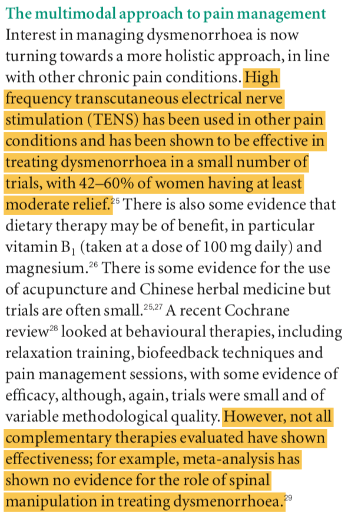
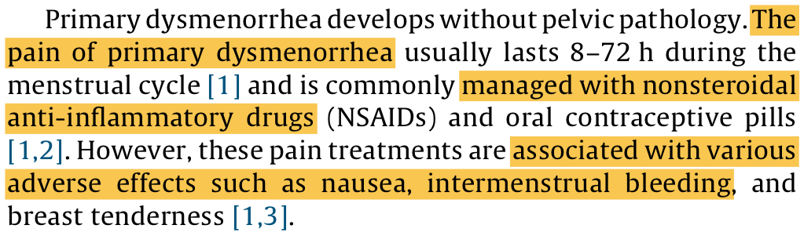
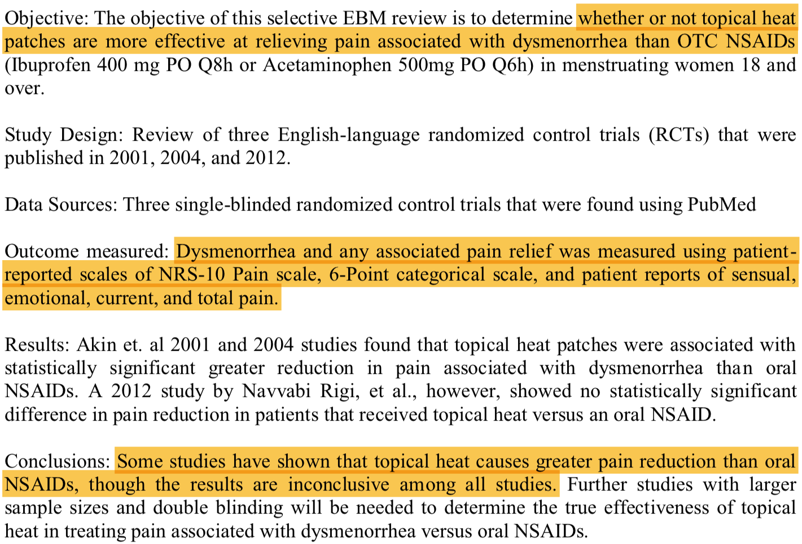
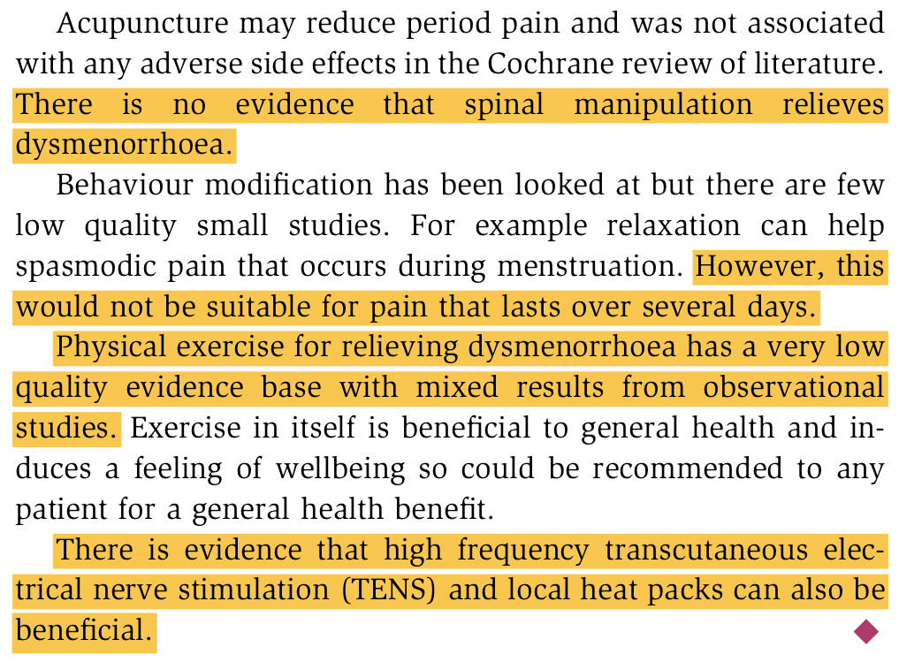
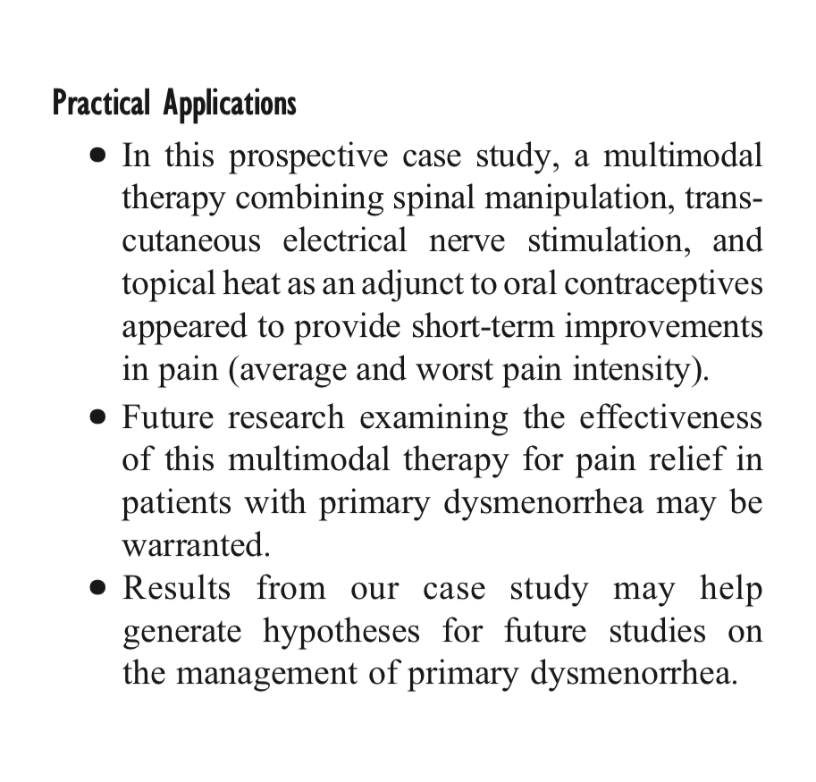
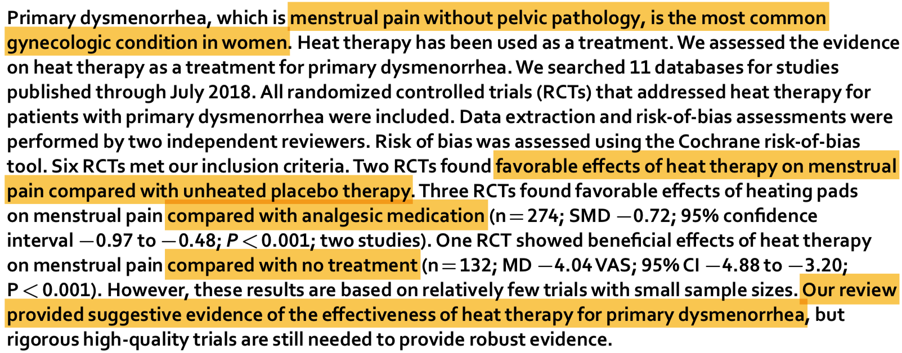

TENSE Therapy for Menstrual Pain
A device to provide transcutaneous electrical nerve stimulation and electrothermal (TENSE) therapy for treating premenstrual syndrome and dysmenorrhea.
General Comments
I think you guys have a great idea. This product kind-of exists (it’s been patented, but I wouldn’t really worry about that because it doesn’t seem like they’ve ever tried to manufacture the device for this purpose), but I want you to think about marketing. Specifically, the most popular electronic device on Amazon for treating menstrual pain is “Livia: The Off Switch for Menstrual Pain,” which has 107 reviews (3.5-star rating) and costs $158. The best TENS/heating unit I can find is this Compex TENS/heat back wrap, which is advertised for “low back comfort and support…from exercise, household work, work or day-to-day activities…chronic pain management, intractable pain, and pain associated with arthritis.” No mention of menstrual pain anywhere. For comparison, this device costs $150 and has a 4.5-star rating, but only 8 reviews. My point here is that your idea (the TENSE unit, as I’m calling it) likely works better than exclusively TENS therapy, but the concept hasn’t been well-marketed to people suffering from menstrual pain.
Dysmenorrhea (2010)
This paper reviews causes, prevalence, presentation, and treatments for dysmenorrhea. It’s a really good summary on the problem you’re trying to solve and includes some commentary on using TENS for pain relief.
“Dysmenorrhoea.” Wallace et al. The Obstetrician & Gynaecologist. 2010. [.pdf]

Big Idea: Somewhere between 50-100% of women experience menstrual pain, with some 10-15% of those cases being described as severe. This is a big problem that could use better solutions! From the article, TENS therapy was effective but spinal manipulation (from a chiropractor) was not.
TENSE for Dysmenorrhea (2015)
This is your idea in practice! It’s not the exact same device design, but it delivers combined TENS and thermotherapy. From the conclusion, “the combination of hf-TENS and thermotherapy was effective in relieving acute pain in women with moderate or severe primary dysmenorrhea.”
“Efficacy of the device combining high-frequency transcutaneous electrical nerve stimulation and thermotherapy for relieving primary dysmenorrhea: a randomized, single-blind, placebo-controlled trial.” Lee et al. European Journal of Obstetrics & Gynecology and Reproductive Biology. 2015. [.pdf]

Big Idea: So, your product is effective, but it’s also important to justify it compared to other treatment approaches. NSAIDs (anti-inflammatory drugs like ibuprofen, acetaminophen, and asprin) can cause GI bleeding, nausea, kidney dysfunction, and hepatotoxicity (liver damage); TENS and heat therapy really can’t do any damage beyond causing redness or tingling. Make sure to emphasize that this is an extremely safe, non-pharmacologic approach! If you’re interested, here is another study that also shows effective pain relief with TENS, and here is an article that looks at kinesio taping and hots packs for treating PMS pain (more non-pharmacological interventions).
Topical Heat Patches (2015)
This is an “evidence-based medicine review,” meaning it examines some previous randomized control trials (actual experiments on patients) and looks at whether they reported consistent findings or not. I think I talked to you guys about the difference between meta-analyses and reviews (meta-analyses do statistical analysis on the combined data from the different studies).
“Are Topical Heat Patches More Effective at Relieving Pain Associated With Dysmenorrhea Than OTC NSAIDs (Ibuprofen 400 mg PO Q8h or Acetaminophen 500 mg PO Q6h) in Menstruating Women 18 and Over?” Murray. PCOM Physician Assistant Studies Student Scholarship. 2015. [.pdf]

Big Idea: Heating by itself isn’t conclusively better than NSAIDs, but some evidence supported that it provided greater relief from menstrual pain. More importantly, heating isn’t associated with nearly as many adverse events as NSAID use and it’s probably cheaper in the long term.
Dysmenorrhea (2016)
Another review of dysmenorrhhea prevalence, causes, and treatments. I really only include this because of the last few paragraphs:
“Dysmenorrhoea.” Stewart. Obstetrics, Gynaecology and Reproductive Medicine. 2016. [.pdf]

Big Idea: Essentially, exercise, relaxation, and spinal manipulation (from a chiropractor) aren’t effective long-term treatments for menstrual pain, but TENS and heating probably are.
Multimodal Therapy (2018)
This is an interesting example of what you might consider “junk science” (no offense to the authors). It’s a largely unremarkable single-patient study (seeing as we’ve already looked at other papers that used spinal manipulation, TENS, and heating), and it doesn’t contribute anything novel to the literature. That said, it corroborates your idea and has quantitative pain measures, so you might give it a look.
“Multimodal Therapy Combining Spinal Manipulation, Transcutaneous Electrical Nerve Stimulation, and Heat for Primary Dysmenorrhea: A Prospective Case Study.” Wong et al. Journal of Chiropractic Medicine. 2018. [.pdf]

Big Idea: This combination of conservative, non-pharmacologic therapies worked for this 27-year-old woman, but remember: a more-reliable source mentioned that spinal manipulation did not have a significant effect on pain reduction.
Heat Therapy (2018)
I remember talking to you guys about systematic reviews and meta-analyses (one summarizes the collective results other papers reported, the other does statistical analysis on their collected data). This is both!
“Heat therapy for primary dysmenorrhea: A systematic review and meta-analysis of its effects on pain relief and quality of life.” Jo et al. Scientific Reports. 2018. [.pdf]

Big Idea: Essentially, this is just great data supporting your idea of including a heating element. These collective studies identified comparative advantages for heat therapy as compared to a placebo, analgesics (like Advil), and no treatment.
Summary Recommendations
Most importantly, emphasize how effective this product could be for your target market. Clearly, this is something existing companies have failed to do (see my general comments). PMS and dymenorrheal pain are huge problems (like, a majority of more than half the planet experiences them), and NSAIDs (asprin, Tylenol, etc.) can cause many adverse health effects. Heating and TENS therapy (TENSE, as I’m calling it) are associated with moderately succcessful pain relief (comparable or better than currently-popular therapies) and essentially no adverse events. This is your selling point, so be sure to own it!